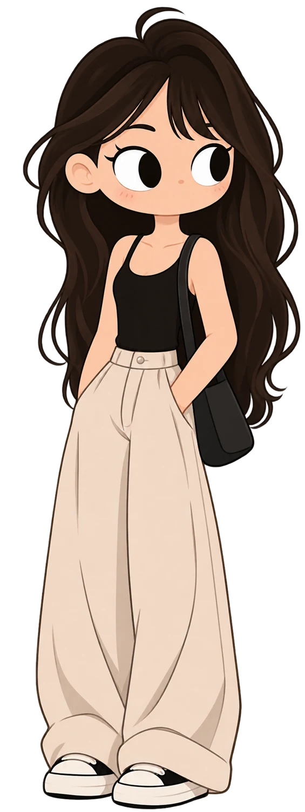
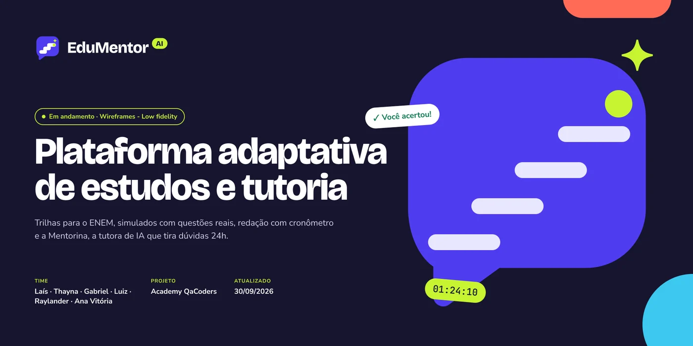
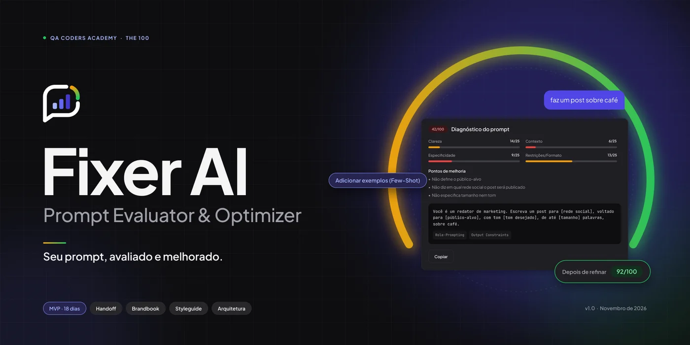
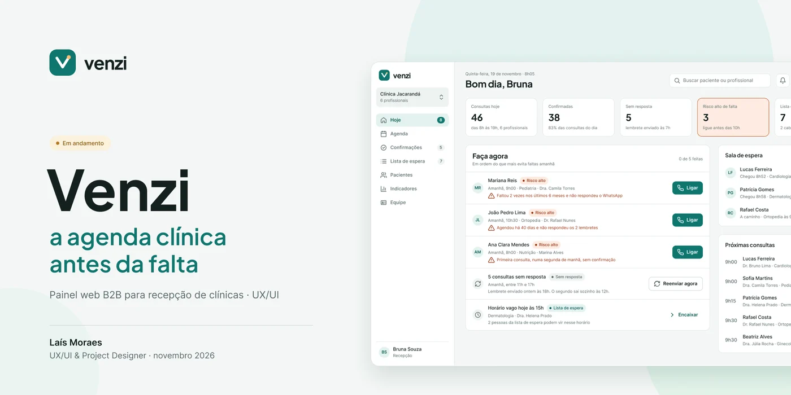
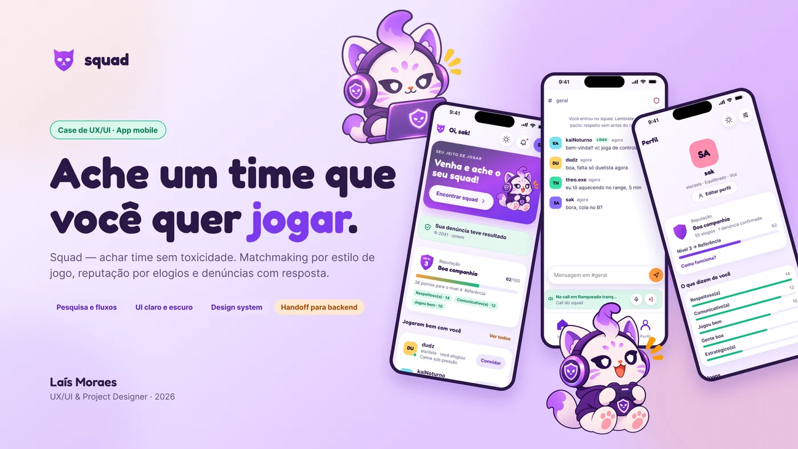
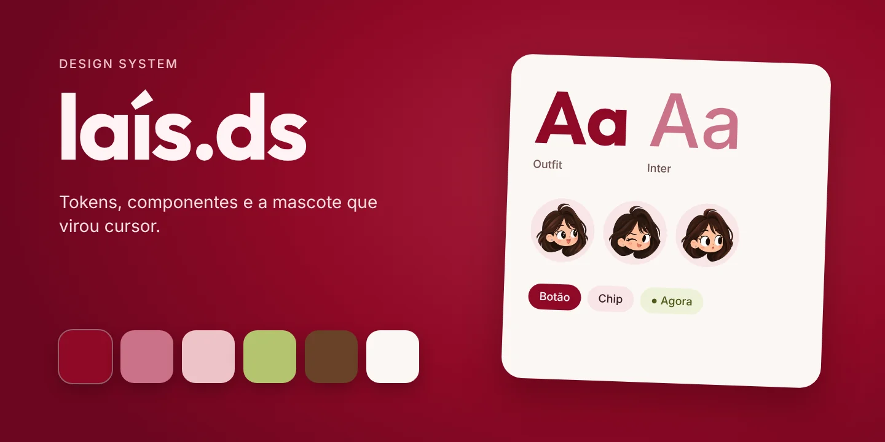
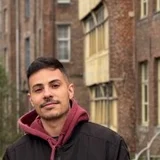
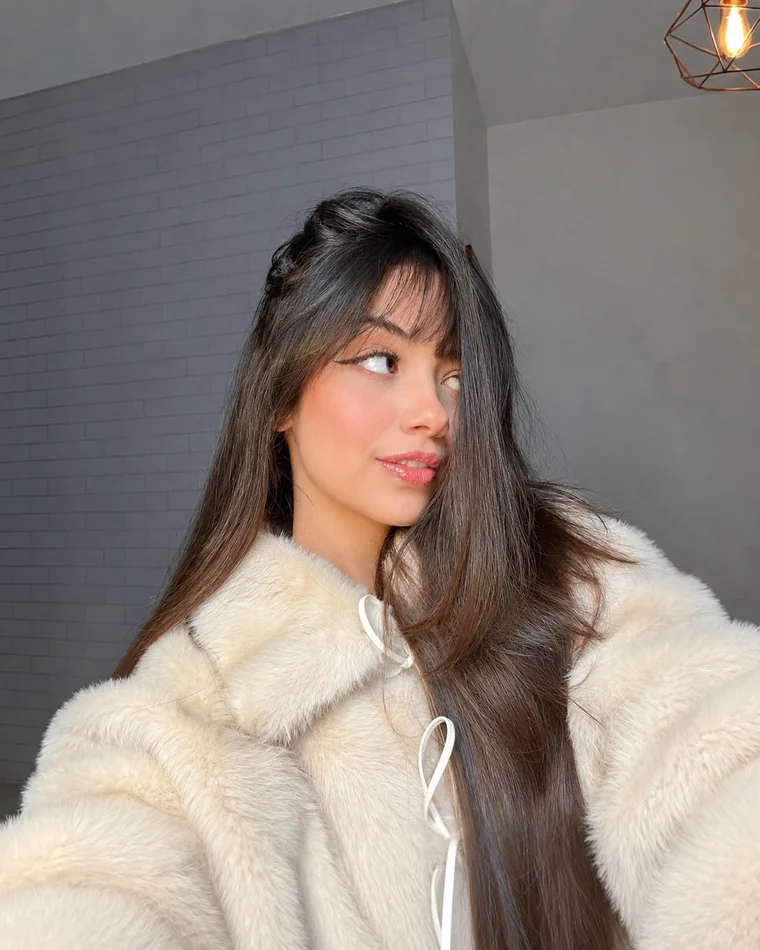

Oi, eu sou a Laís Moraes.
Desenho produtos que as pessoas entendem.
Agora UX/UI e QA no meuunify, desenhando um superapp de crédito da primeira entrevista ao produto lançado.
 oi! eu sou a Laís em versão desenho ✦clica em mim
oi! eu sou a Laís em versão desenho ✦clica em mim
Projetos
Separados por de onde vieram: produto lançado no mercado, projetos em time no bootcamp e projetos autorais.
Produto lançado
Trabalho real, com time, prazos e usuários de verdade.
Projetos em time
Times multidisciplinares com QA e devs, prazos curtos e MVPs de verdade.

EduMentor AI
Um app de estudos para o ENEM com uma tutora de IA que explica, cria exercícios e corrige redações.
Ver estudo de caso →
Fixer AI
Você cola um prompt e recebe uma nota em clareza, contexto, especificidade e formato, e uma versão melhor para copiar.
Ver estudo de caso →Do zero, por conta própria
Ideias minhas, da pesquisa ao protótipo navegável.

Venzi: a agenda clínica antes da falta
Um painel que mostra para a recepção quem pode faltar, por quê e quem pode ocupar o horário. 28 telas e protótipo com 3 fluxos guiados.
Ver estudo de caso →
Squad
Achar time para jogar sem flame: escolha pelo clima, aviso de tom e proteção de voz. No celular e no computador.
Ver estudo de caso →
Este portfólio
Tokens, componentes e a mascote que virou cursor, em tema claro e escuro.
Ver estudo de caso →Como eu trabalho
Do problema à entrega, com o time junto em cada etapa.
Entender
Começo pelo problema e pelas pessoas: jornadas do usuário e backlog lado a lado. No UNI FY, cada tela foi mapeada 1:1 ao backlog.
Desenhar
Fluxos, wireframes e protótipo navegável, para todo mundo enxergar a mesma coisa antes de construir. O do UNI FY foi apresentado a todos os departamentos.
Validar
Levo a proposta para o time e ajusto com o que aparece. Foi assim que o cadastro em etapas entrou na V1.
Garantir a entrega
Faço o QA do que foi desenvolvido: comparo com o design, documento com evidência e retesto com os devs. Numa só rodada, 34 pontos encontrados antes do lançamento.
Quem já trabalhou comigo
Recomendações de quem acompanhou meu trabalho de perto.
A Laís é uma profissional de UI/UX de grande competência, com quem tive o prazer de colaborar. Seu método de trabalho é organizado e rigoroso, o que facilitou a integração entre design e desenvolvimento. Ao mesmo tempo, demonstra criatividade ao propor soluções visuais claras e funcionais. Sua atuação na criação de design systems elevou a consistência e a eficiência dos projetos. Indico seu trabalho com confiança.

Thiago CaetanoSoftware Engineer e Tech Lead no meuunify
Laís demonstrou ser uma excelente pessoa que com certeza irá se tornar uma grande profissional no mercado de TI. Demonstrou interesse e conhecimento em produto, design e programação, o que identifiquei como sendo as bases para uma carreira promissora como arquiteta de soluções. Já está capacitada para atuar como PO ou designer, tendo demonstrado na prática suas capacidades na ideação de produto e condução de squads, além de ter construído excelentes designs fundamentados em boas práticas.
Como desenvolvedor, fico impressionado com a fluência com que ela traduz regras de negócio complexas em interfaces claras, intuitivas e visualmente únicas. Ela domina toda a jornada de concepção do produto: da estruturação de MVPs, fluxogramas e diagramas lógicos até layouts modernos, coesos e pensados para facilitar a vida tanto de quem usa quanto de quem coda. Recomendo de olhos fechados para qualquer equipe que busque elevar o nível do seu produto.

De arquiteta a Product Designer
A arquitetura me ensinou a pensar no sistema inteiro antes do detalhe: quem vai usar, por onde entra, onde se perde. Hoje faço essa mesma pergunta em cada tela.
De lá também trouxe o gosto por documentar bem, apresentar para quem decide e cuidar dos detalhes que ninguém nota, até alguém tropeçar neles.
Uso a IA como nova prancheta: ela acelera o processo, mas a ideia e a forma final continuam sendo minhas. E como também programo e testo, a conversa com os devs flui.
Trajetória e formação
Da arquitetura ao produto digital, em ordem.
- 2015 – 2019
Bacharelado em Arquitetura e Urbanismo
UNIGRANRIO
- 2020 – 2024
Arquiteta e Urbanista (CAU/BR)
5 anos em arquitetura e interiores corporativos, incluindo a Athie Wohnrath.
- fim de 2024
A virada para a tecnologia
Trilhas de UX/UI e de desenvolvimento na Alura.
- jan 2025
Estagiária de TI · CIABRA
Interfaces em HTML, CSS e TypeScript, APIs REST, SQL e Git em time Scrum.
- mar 2026
Dev Júnior Full Stack & UI/UX · DUNA ERP
Fluxos, protótipos e implementação num ERP web.
- abr 2026 · hoje
UX/UI Designer · UNI FY
Design e QA do superapp de crédito. V1 lançada em set/2026.
- 2026
Bootcamp de Desenvolvimento de Apps · QA Coders Academy
PO e UX/UI no EduMentor AI e UX/UI no Fixer AI.
Cursos
Fora do Figma
Clica numa pasta pra me conhecer um pouco melhor.
Escolhe uma pasta ✦
8 arquivos sobre quem eu sou quando não estou desenhando telas.
Bora criar algo juntos?
Estou aberta a vagas de Product Designer, remotas ou internacionais. Me dá um oi, eu respondo rápido.
Disponível para novas oportunidades- Onde
- Rio de Janeiro, Brasil
- Fuso
- UTC−3 (horário de Brasília)
- Modelo
- Remoto ou internacional
- Idiomas
- Português, inglês, espanhol